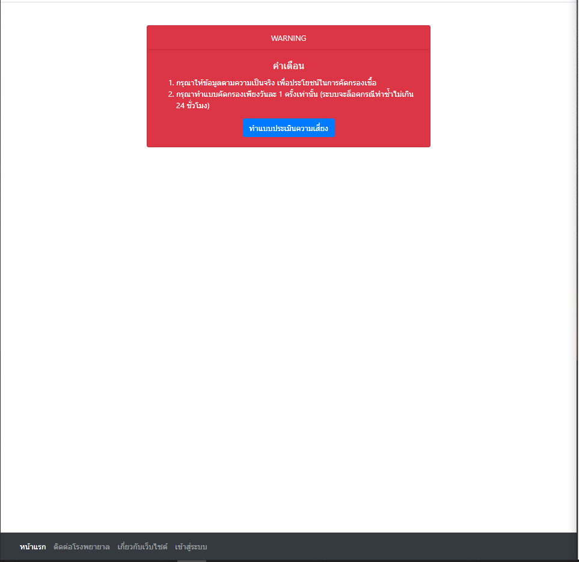
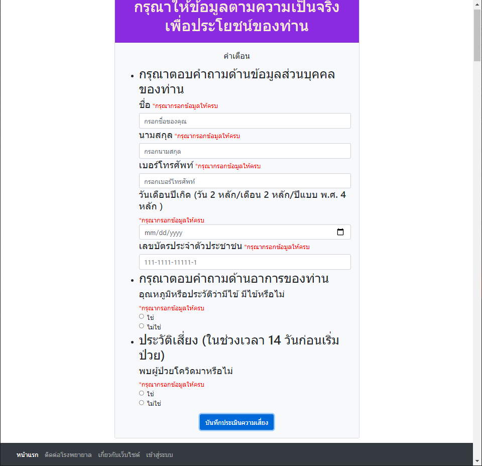
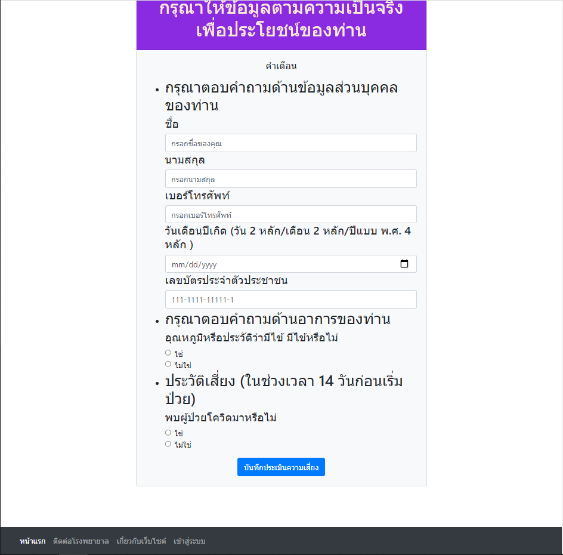

ใน workshopนี้จะเป็นการทำ web-site ในรูปแบบ front end ในการส่งแบบ form ในการประเมินอาการ ว่าเข้าข่ายเสี่ยงติด covid-19 หรือไม่ซึ่งในหน้า index.html นี้ส่วนใหญ่จะใช้เป็น bootstrap ในการสร้างโดยนำโค้ดจาก example ใน web bootstrap มาปรับเล็กน้อยเช่น nav bar และ shadow ของ logo จะเห็นได้ว่าดูสวยงามตามแบบมาตฐาน และเมื่อ click ที่ทำแบบประเมินจะเข้าสู่หน้า attemption.html เป็นหน้าแสดงคำเตือนก่อนเข้า form
เมื่อ click ที่ทำแบบประเมินความเสี่ยงจะเข้าสู่หน้า form ในหน้านี้จะมีความยุ่งยากเล็กน้อยเนื่องจากถ้าเราต้องการเก็บข้อมูลในรูปแบบที่ถูกต้องเราจำเป็นต้องทำ form validate เพื่อตรวจสอบความถูกต้องก่อนจะส่งข้อมูลเข้า database โดยใช้ jQuery plung in มาช่วยจัดการเรื่องนี้ทำให้โค้ดสั้นขึ้นและเขียนได้ง่ายขึ้น
รูปด้านบนคือหน้า form ก่อนกดบันทึกประเมินความเสี่ยง และรูปด้านล่างคือการทดสอบเมื่อไม่ได้กรอกข้อมูลให้ถูกต้องหรือไม่ครบถ้วน
